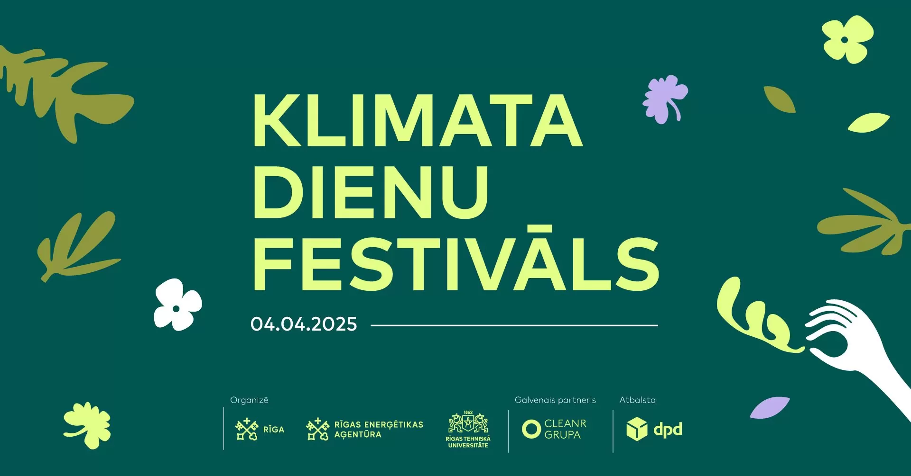
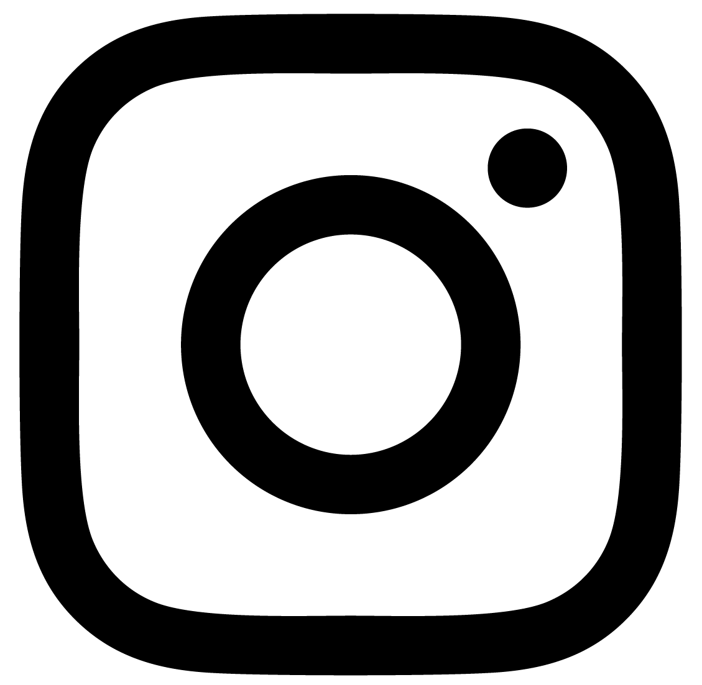

AICINĀJUMS PIEDALĪTIES "KLIMATA DIENU FESTIVĀLĀ" 04.04.2025.- konkursa - iniciatīvas "Klimata dienas skolās" noslēguma pasākumā
Visa mācību gada garumā Rīgas pašvaldības skolu komandas, kuras piedalījās konkursā- iniciatīvā “Klimata dienas skolās”, identificēja un īstenoja dažādus energotaupības pasākumus, lai samazinātu enerģijas patēriņu savā skolā, ar klimatu saistītas aktivitātes un radīja jaunus produktus no jau izmantotām lietām, vienlaikus gūstot un nostiprinot zināšanas par ilgtspējīgu un atbildīgu rīcību, kas mazinās sabiedrības klimata pēdas nospiedumu.
Ar prieku aicinām IKVIENU skolēnu, klasi, skolotāju un administrācijas pārstāvi piedalīties konkursa – iniciatīvas “Klimata dienas skolās” noslēguma pasākumā “KLIMATA DIENU FESTIVĀLS”, kas norisināsies 4. aprīlī Rīgas Tehniskās universitātes (RTU) studentu pilsētiņā Ķīpsalā ar plašu aktivitāšu loku un klimatam draudzīgāko klašu un skolu apbalvošanu (pielikumā Festivāla programma).
Festivāls sāksies plkst. 9.00 RTU auditoriju centrā “Domus Auditorialis”.
Skolu komandas, kuras ir izvirzītas konkursa II kārtai (iesniegušas savu mācību gada garumā izstrādāto un paveikto) tuvākajās dienās saņems detalizētu informāciju par dalību festivālā.
Visiem Festivāla apmeklējums ir bez maksas un atvērts jebkuram interesentam (reģistrācija nav nepieciešama.)
|
 @agenskalna.valsts |
avgdome@gmail.com |
@avgdome |
@agenskalniesi |